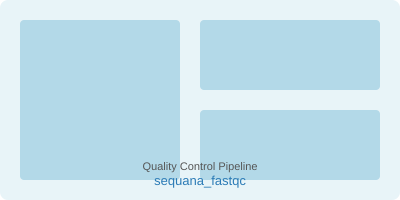
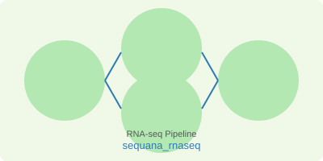
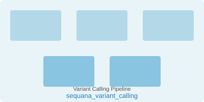
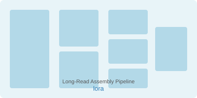
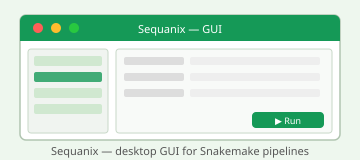

This page serves as an additional set of resources for the Sequana project. Sequana is comprised of a Python library, the documentation of which is accessible on Read The Docs. The source code for the Python library can be found on GitHub.
One of the primary objective of the Sequana project is to offer a collection of NGS pipelines. The pipelines currently available are located on PyPI and the Sequana GitHub organisation page, each having their own repository. For instance, the RNA-seq pipeline can be found at sequana/rnaseq.
Sequana provides a collection of NGS pipelines. Each pipeline lives in its own repository on the Sequana GitHub organisation. Below are some highlighted pipelines:




The following tools have been published in peer-reviewed journals. Each tool is also available as a standalone application within the Sequana Python library.


In addition to its NGS pipelines, Sequana ships a set of standalone sub-commands that can be
invoked directly from the command line (sequana <subcommand>). These tools
cover common NGS utility tasks and are distributed as part of the
sequana Python package.